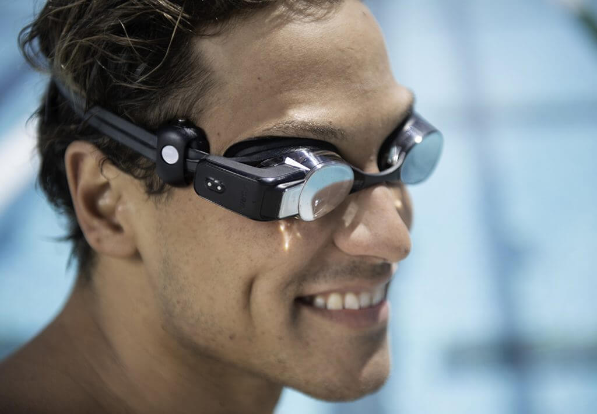
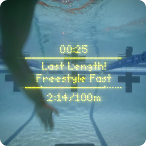
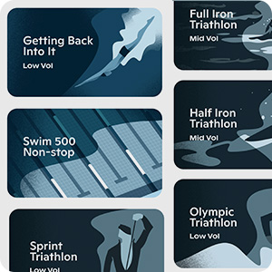
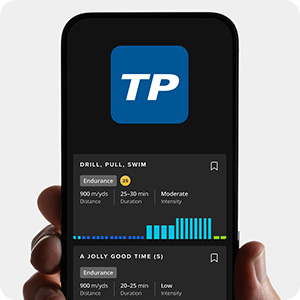
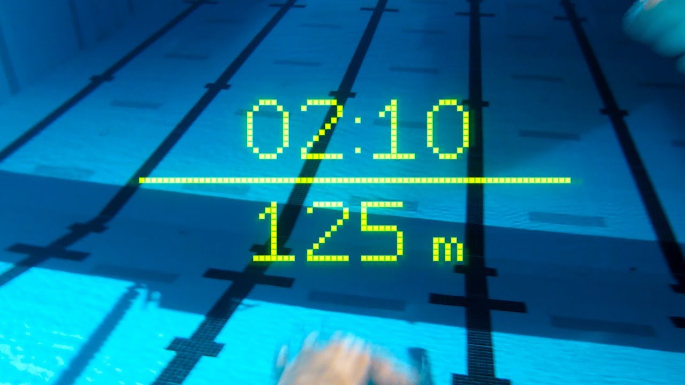

¿Que son las "Form Swin Goggles"?
Las Form Swim Goggles son unas gafas de natación inteligentes diseñadas para proporcionar a los nadadores información en tiempo real sobre su rendimiento. Estas gafas cuentan con una pantalla integrada en su interior que muestra diversas métricas mientras nadas, sin necesidad de mirar constantemente la muñeca o detenerte en la pared.
Cuando usas las Form Swim Goggles, puedes ver información como la distancia recorrida, el ritmo de natación, el tiempo transcurrido e incluso el número de brazadas que has realizado. Esta información te ayuda a monitorear y evaluar tu rendimiento en tiempo real, ajustando tu técnica o ritmo según sea necesario.
Las gafas Form también son compatibles con la natación en aguas abiertas, lo que significa que puedes obtener información de rendimiento incluso cuando nadas al aire libre. Además, estas gafas ofrecen funciones premium, como la posibilidad de configurar entrenamientos personalizados y acceder a análisis detallados de tus sesiones de natación.
Para utilizar las Form Swim Goggles, necesitarás cargarlas y configurarlas previamente a través de una aplicación móvil. Una vez configuradas, podrás llevar las gafas mientras nadas y observar las métricas en tiempo real gracias a la pantalla integrada.
Es importante destacar que las Form Swim Goggles están diseñadas teniendo en cuenta la comodidad del nadador. Además, su diseño se asemeja al de las gafas de natación tradicionales, pero incluyen una pequeña estructura en el lateral derecho donde se encuentra la zona de carga y los botones de control.
¿Qué incluye con la compra?
Prueba de 1 año de Premium con cada compra
Entrena de manera más inteligente con funciones Premium como entrenamientos diseñados por entrenadores, una extensa biblioteca de Planes de Entrenamiento e integración con TrainingPeaks. Logra tus objetivos a una fracción del costo de entrenamiento privado. Solo tienes que llegar a la piscina y nadar.
Empareja tus gafas en la aplicación para activar. Prueba de 1 año, $15/mes después. Cancela en cualquier momento, seguirás teniendo acceso a métricas en tiempo real en tus gafas y análisis post natación en la aplicación.
  - Función Premium: Entrenamientos Diseñados por Entrenadores
- Función Premium: Más de 30 Planes de Entrenamiento
- Función Premium: Integración con TrainingPeaks
Más de 1500 entrenamientos con instrucciones en tus gafas. Tus gafas te dirán exactamente qué hacer, cuándo hacerlo y el nivel de esfuerzo para nadar, como si tuvieras un entrenador real. Crea tus propios entrenamientos o edita uno de los nuestros usando el Creador de Entrenamientos.
Selecciona un plan de entrenamiento según tus objetivos, ya sea que quieras nadar más rápido, mejorar tu técnica o prepararte para un triatlón. Sincronízalo con tus gafas, deja tu teléfono en tu bolsa y luego sumérgete.
Importa tus entrenamientos de TrainingPeaks a la aplicación FORM y ve las instrucciones en tus gafas. Una vez que tu sesión ha terminado, los datos se sincronizan automáticamente de vuelta a TrainingPeaks.
Aqui puedes comprar las "Form Swin Goggles"
Ventajas
- Pantalla inteligente: Las gafas de natación cuentan con una pantalla integrada en las propias gafas, lo que permite al nadador ver las métricas de rendimiento en tiempo real sin tener que mirar constantemente su muñeca o detenerse para consultar otros dispositivos. Esto proporciona una experiencia más fluida y te permite mantener el enfoque en tu nado.
- Métricas en tiempo real: Las gafas te brindan información precisa y en tiempo real sobre tus métricas de natación, como distancia recorrida, ritmo y velocidad de brazada. Estos datos te permiten evaluar tu rendimiento mientras nadas y ajustar tu técnica para mejorar tu eficiencia en el agua.
- Workouts y planes de entrenamiento personalizados: Las gafas ofrecen workouts guiados y planes de entrenamiento diseñados por profesionales. Estos workouts aparecen directamente en la pantalla de las gafas, lo que te facilita seguir instrucciones paso a paso sin interrupciones. Esto te ayuda a realizar entrenamientos más efectivos y te mantiene motivado en tus objetivos.
- Compatibilidad con otras aplicaciones y plataformas de entrenamiento: Las gafas se integran con aplicaciones y plataformas populares como Strava y TrainingPeaks. Esto te permite compartir tus datos de natación con otras herramientas para un análisis más profundo de tu rendimiento y establecer nuevos objetivos.
- Comodidad y durabilidad: Además de todas las funciones inteligentes, las gafas también son cómodas de usar y están diseñadas para resistir condiciones acuáticas. Sus características ergonómicas te brindan una experiencia agradable al nadar. 
Caracteristicas
- Diseño ergonómico: Las gafas están diseñadas con comodidad en mente. Tienen un ajuste ergonómico que se adapta a diferentes formas de cabeza y evita las molestias durante la natación. El diseño minimiza las fugas de agua y proporciona un sellado efectivo alrededor de los ojos.
- Conectividad y sincronización: Las gafas se conectan de forma inalámbrica a la aplicación móvil FORM Swim App a través de Bluetooth. Esto permite sincronizar y analizar los datos de natación de manera conveniente en tu dispositivo móvil. También es posible conectar las gafas a otros dispositivos compatibles, como relojes inteligentes, para tener una visualización adicional de tus métricas de rendimiento.
- Resistencia al agua y durabilidad: Las gafas están diseñadas para soportar las condiciones acuáticas. Son resistentes al agua hasta una profundidad de 10 metros, lo que las hace adecuadas para nadar en piscinas, aguas abiertas y otros entornos acuáticos. Además, están construidas con materiales duraderos que proporcionan una larga vida útil.
- Interfaz intuitiva: La pantalla inteligente de las gafas presenta una interfaz clara y fácil de entender. Las métricas de natación y los workouts se muestran de forma legible y se pueden navegar sin problemas mientras se está en el agua.
¿Por qué he elegido este producto?
Las gafas de natación inteligentes Form swim goggles desempeñan un papel crucial en la interacción entre personas y ordenadores. Estas gafas han captado mucho interés debido a su capacidad para proporcionar información en tiempo real y mejorar la experiencia de natación.
Una de las razones principales por las que las Form swim goggles son importantes en la interacción persona-ordenador es su capacidad para realizar todas las caracteristicas nombradas con anterioridad y asi poder hacer de la natacion mas profesional una mejor experiencia al usuario.
Creo que puede ser un producto bastante innovador y que hasta el momento en que hice el trabajo nunca habia oido hablar de el. Creo que puede ser muy util sobre todo en entrenamientos de profeioanles, obviamente estas gafas no te van a hacer ser el mejor nadador o nadadora pero si te hara ser mucho mas eficiente en tus entrenamientos y poder tener estadisticas a la vez que realizas tus sesiones de natación.